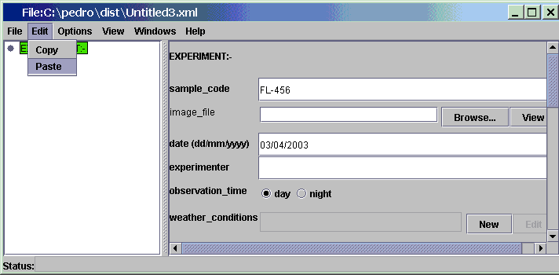
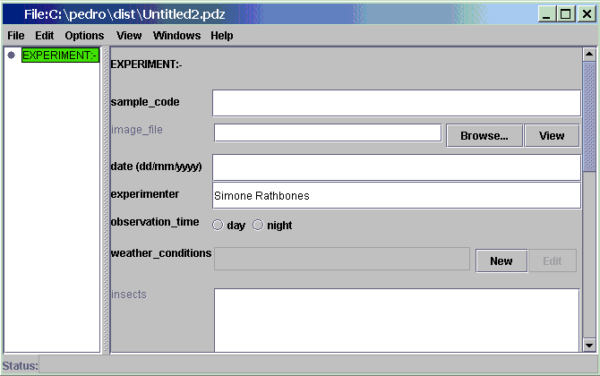
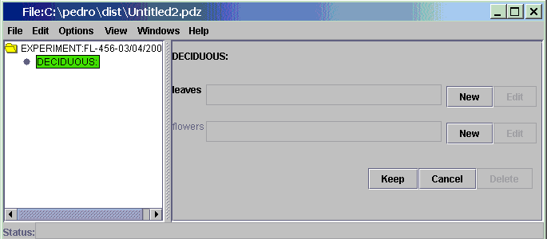
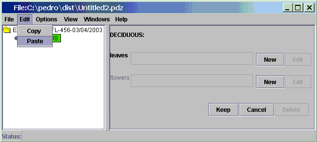
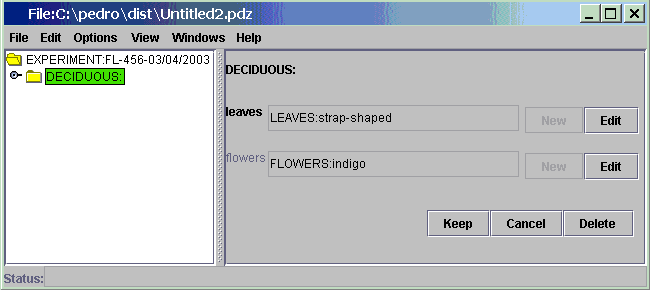

Paste
- pastes copied text to the currently selected text field
-
pastes copied records into the currently selected record.
Please see Copy if you're copying data from another Pedro
window. Otherwise, we'll assume you've copied text from some other application.
Pasting Text
- Place the mouse cursor in the desired text field.
-
Click the "Edit" menu.

-
Click on the "Paste" button.

Pasting a Record
- Select a record that is of the same type as the record you're
copying.

- Click the "Edit" menu

-
Click the "Paste" button

Note that pasting a record will overwrite the contents of the
currently selected record. As shown in the tutorial data model, if you are pasting an
"Experiment" record when the currently selected record is a populated
Experiment record, the current record will lose all its old field
values and subrecords.